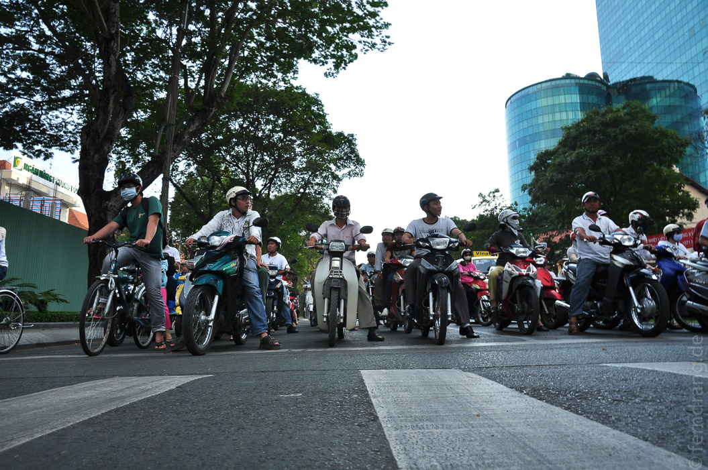
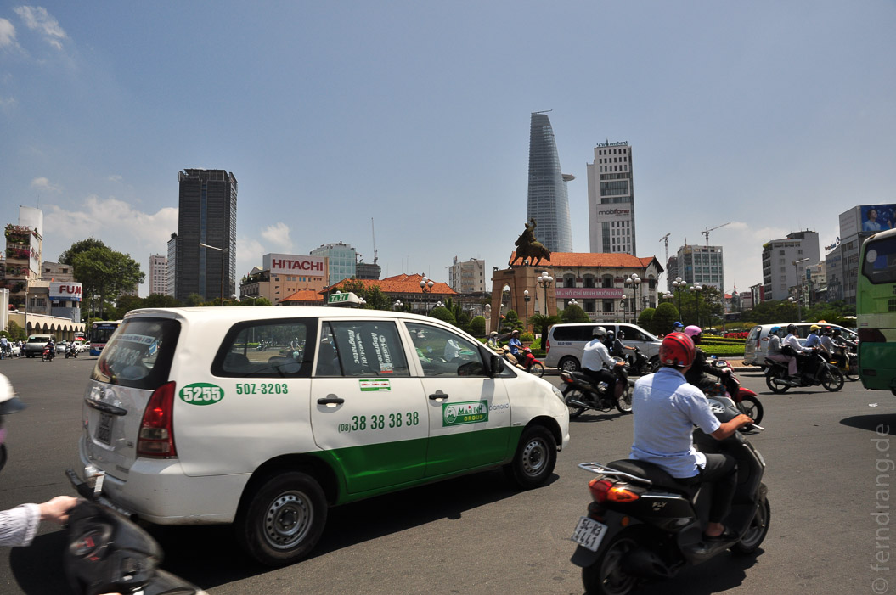
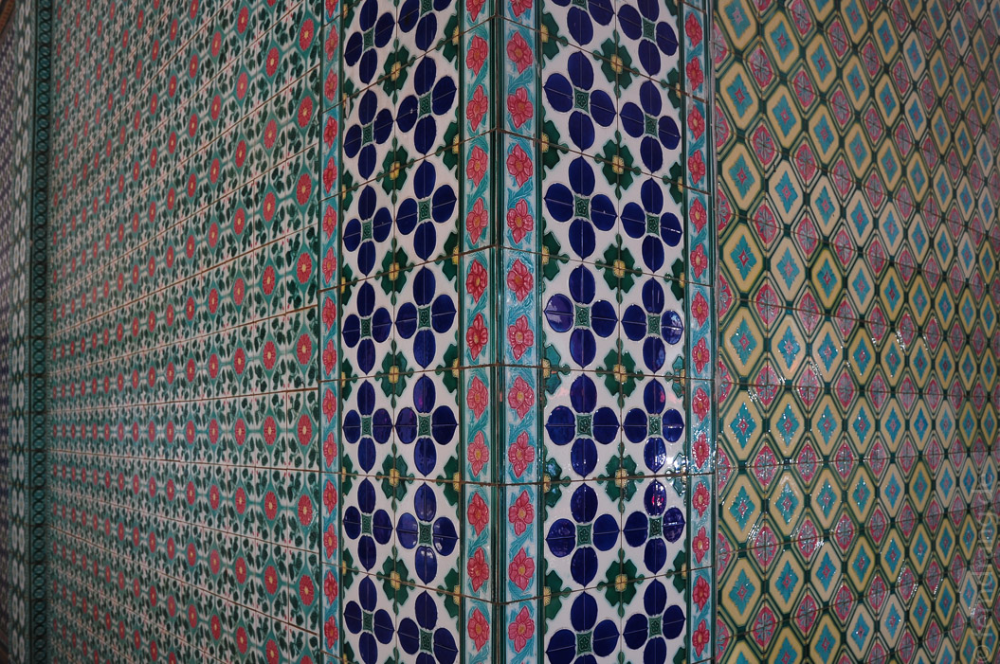
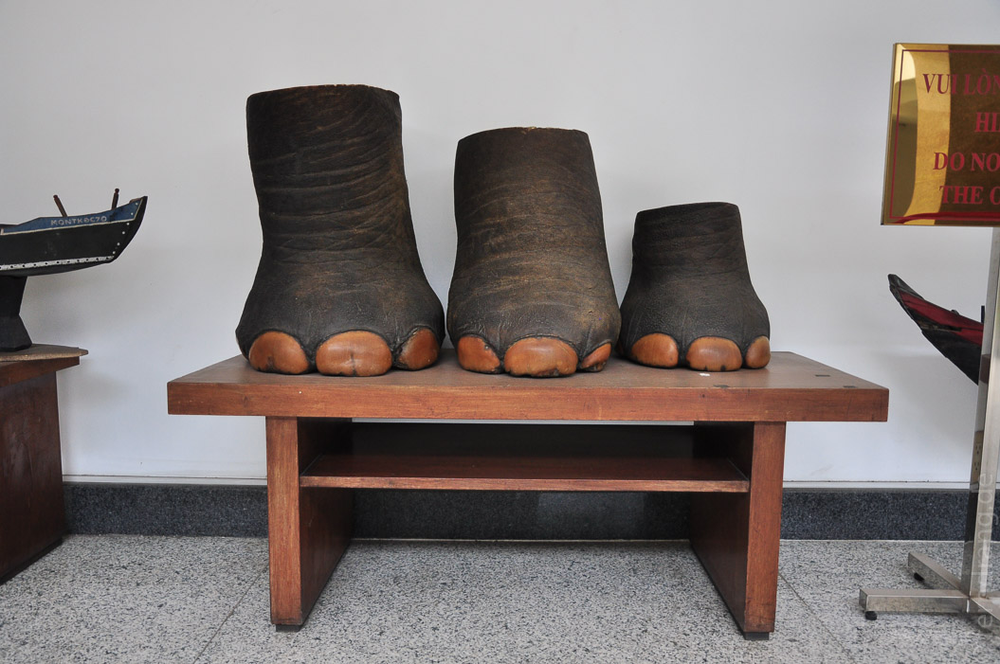
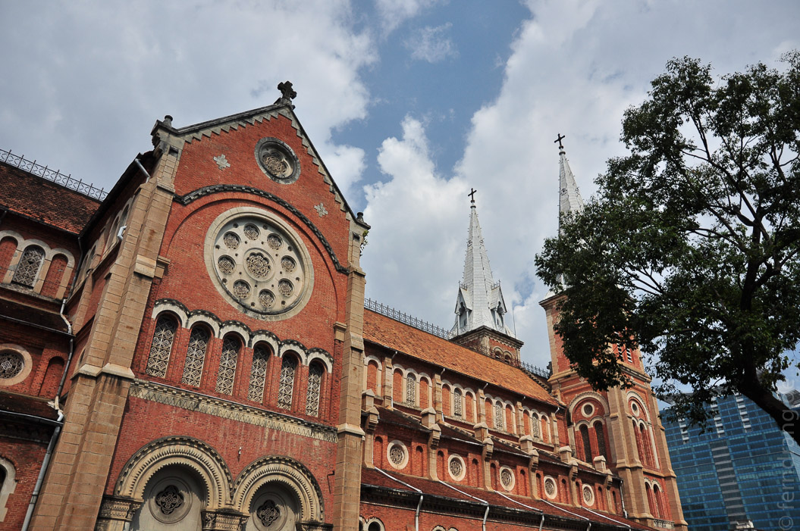
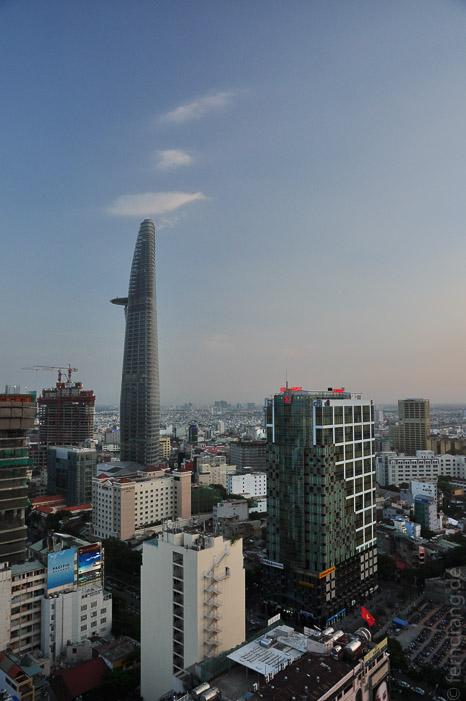

Weil es in Can Tho nach der Bootsfahrt auf den Kanälen nichts mehr zu sehen gab, haben wir unsere Weiterreise etwas beschleunigt. Nach sieben Stunden im Boot und einem kurzen Stopp zum Duschen und Packen im Hotel sind wir am Nachmittag in den Bus nach Saigon gestiegen. Kurz nach Sonnenuntergang steckten wir schon mitten im Chaos aus Lichtern, Hupen und Rollern der "Honda-City".
Bei der Fahrt zur überlaufenen Backpacker-Meile "Pham Ngu Kao" merkt man, dass die Stadt viel größer und moderner als Hanoi ist. Hier gibt es richtige Wolkenkratzer und noch viel mehr Motorräder. Aber vor allem die vielen Einkaufsgeschäfte, seien es Supermärkte oder Chanel, sorgen für ein geradezu westliches Flair. Dafür wirkt es weniger charmant als die Altstadtsträßchen der Hauptstadt.
Ein erschöpfender Spaziergang hat uns durch das historische Inventar Saigons geführt. Da gibt es z. B. den hässlichen Wiedervereinigungspalast, der in den 60er Jahren nach aktuellstem Trend gebaut und nach der "Vereinigung" durch Nordvietnam in den 70ern unverändert geblieben ist. Er bietet eine Zeitreise in die Ära der Bakelit-Telefone, vergilbten Landkarten im Überformat und dicken Teppichen in fürchterlichen Farben. Das kleine Opernhaus oder das prachtvolle Hotel de Ville erinnern an die Kolonialzeit. Für einen Besuch im chinesischen Viertel Cholon hat die Zeit leider nicht gereicht.
  Den Sonnenuntergang haben wir uns von der Dachterrasse des Sheratons aus angesehen. Vom 23. Stock aus hat man einen tollen Ausblick über die Stadt. Obwohl es schon recht weit nach unten geht stehen nebenan noch Hochhäuser, die noch viel weiter in den Himmel ragen. Und überall werden noch höhere gebaut. Die Cocktails im Sheraton sind die teuersten und schlechtesten der Reise gewesen.
